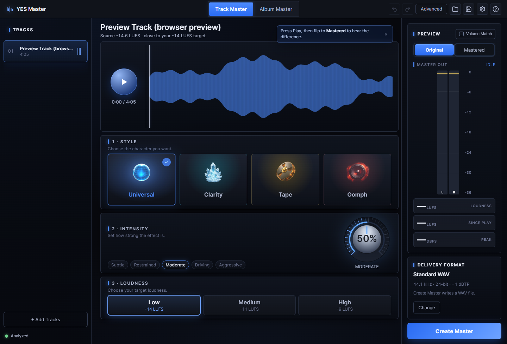
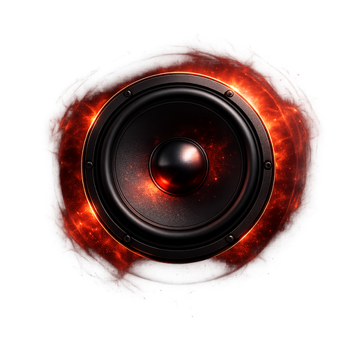

Shape the chain
Intensity, visual EQ, saturation, warmth, width, and preset character sit in the creative surface.
Local-first mastering for real tracks
Drop in audio, hear the mastering chain in real time, and export a technically checked master without sending private tracks to the cloud.

Standard is built for the moment when you want to finish the track instead of opening another technical rabbit hole. Choose the character, set intensity, pick a loudness, and create a fixed 44.1 kHz / 24-bit WAV at a -1 dBTP ceiling.
The safe path stays obvious, but the app still respects your ears. Preview, compare, export, and keep moving.
Universal, Clarity, Tape, and Oomph give non-technical users plain language while staying mapped to the same engine underneath.

OomphAdvanced keeps the same engine visible: presets, tone shaping, width, warmth, compressor modes, live meters, delivery formats, and review-aware export.
Intensity, visual EQ, saturation, warmth, width, and preset character sit in the creative surface.
Quality checks flag true peak, loudness, dynamic range, and already-compressed sources before you treat a render as done.
Advanced exposes delivery profiles and formats for track and album work without hiding the final export recipe.